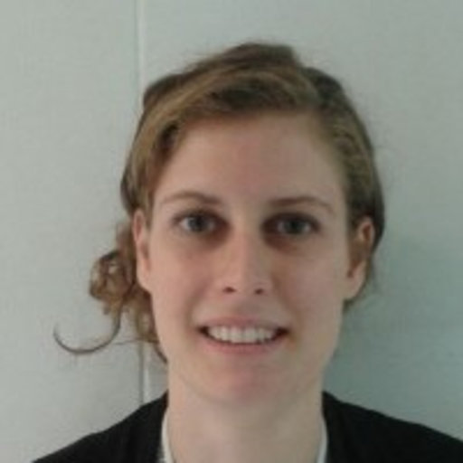
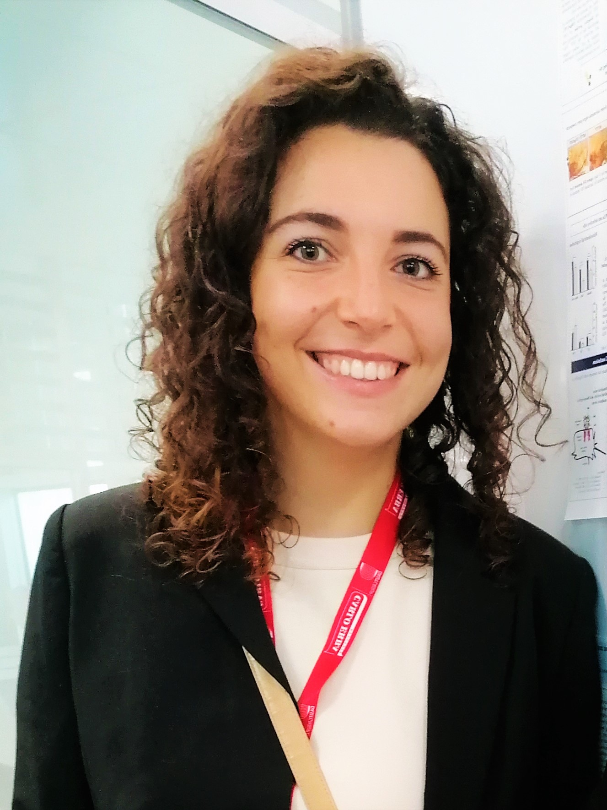
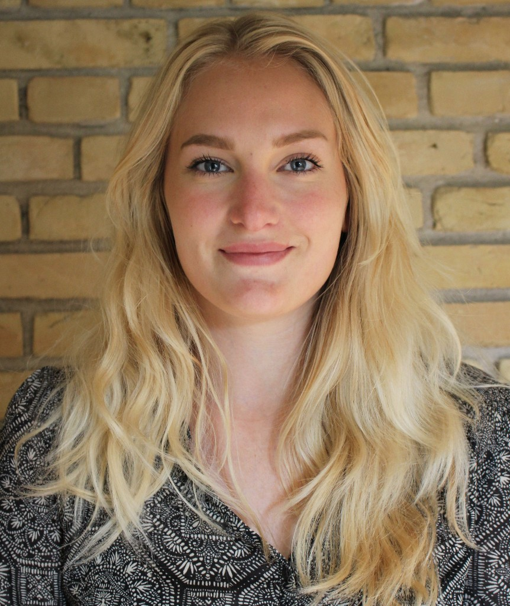
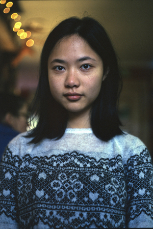
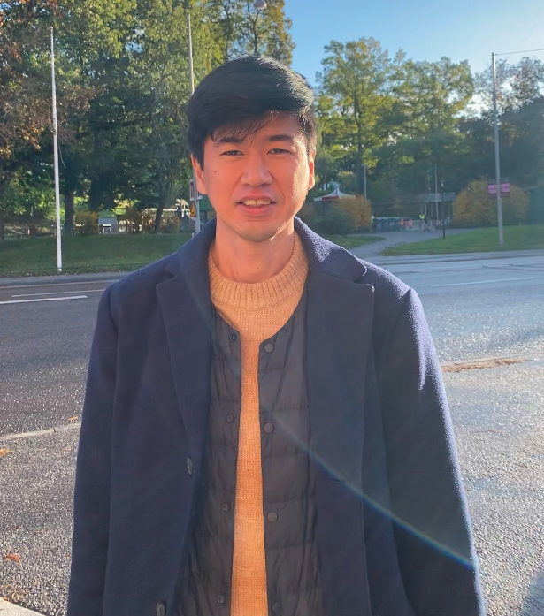
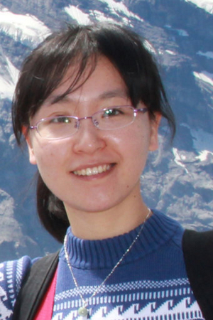
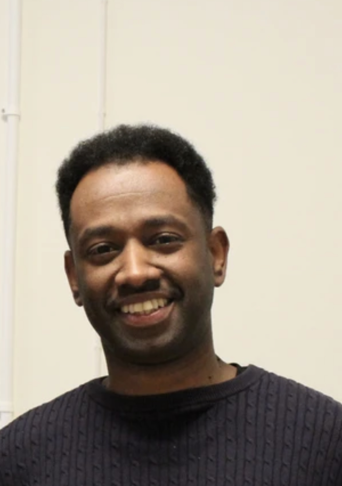
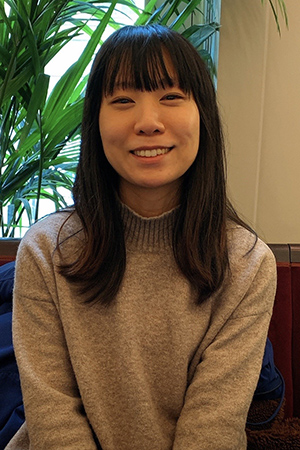

Current Lab Members


Sandra Gellhaar
Laboratory manager
sandra.gellhaar@ki.se
Sandra obtained her PhD at the Department of Neuroscience, KI in 2015. She spent her postdoc both at the Department of Neuroscience as well as the Department of Neurobiology, Care sciences and Society, KI with an interest in neurodegenerative diseases, especially Alzheimer´s and Parkinson´s disease. In the Arenas group she will support the proper functioning and development of different projects in the lab. In her free time she likes spending time with her kids and likes to do handicraft work.


Chiara Tremolanti
Postdoctoral Researcher
chiara.tremolanti@ki.se
Chiara did her PhD in Neurobiology between the University of Pisa (Italy, where she is from), and the University of Strasbourg (France). She joined Ernest Lab in 2022 as a Postdoc. Her research investigates the role of sulfatases enzymes in the development of midbrain dopaminergic neurons, with the final goal of improving cell replacement therapy for Parkinson's Disease. In her free time, she likes to cook, do sports, and travel.


Emilia Síf Ásgrimsdottir
Doctoral student
emilia.sif.asgrimsdottir@ki.se
Emilia did her masters study at Aarhus University, Denmark. She is interested in developmental neuroscience. She will focus on in vitro differentiation of human ES cells to dopaminergic neurons.

Ka Wai (Kawai) Lee
Docktoral student
ka.lee@ki.se
Kawai did her bachelor’s study in molecular biology, and has developed an interest in bioinformatics and single cell techniques during her master’s degree. She is interested in applying bioinformatics in the field of developmental neuroscience.

Hirofumi Noguchi
Postdoctoral researcher
hirofumi.noguchi@ki.se
Hirofumi Noguchi is from Japan. He will develop a more precise cell replacement strategy for Parkinson disease by producing specific subtypes of dopaminergic neurons through the direct conversion of somatic cells. He likes coffee and pastries from Sweden, but also playing Japanese chess (Shogi).

Anqi Xiong
Postdoctoral researcher
anqi.xiong@ki.se
Anqi obtained her PhD in Neuro-oncology at the Uppsala University in Sweden. Her interests include cellular reprogramming as a therapeutic approach for Parkinson’s disease.

Mubasher Mohammed
Postdoctoral researcher
mubasher.mohammed@ki.se
Mubasher obtained his PhD in Molecular Biosciences at the Stockholm University in Sweden, His interests include applying computational tools and generative models to dissect cellular structure and molecular complexity of human midbrain Astrocytes. His research goal is to define Astrocyte subtypes in PD patients for Cell-replacement therapy, .

Rika Kojima
Doctoral student
rika.kojima@ki.se
Rika did her Master’s study in Systems Biology at Kyoto University, Japan. She is interested in the link between gene mutations and the development of Parkinson’s disease. She is doing her PhD in Per Svenningsson’s group at Karolinska Institutet. In collaboration with our group, she will investigate the roles of gene mutations in the molecular pathogenesis of Parkinson’s disease using patient iPSC-derived dopaminergic neurons.
Guochang Lyu
Doctoral student
guochang.lyu@ki.se
Guochang is from China and is new recruited as a PhD student in the Arenas group. He is a self-certified marathon runner and is up for a talk over papers anytime.
Postdoctoral researcher positions
Please, send your inquiries by e-mail to ernest.arenas@ki.se and include the following information:
- CV with publications and research experience
- A brief outline of research interests
Alumni
Shanzheng Yang
Senior Researcher
Gonzalo Saiz Castro
Master student
Lucie Woloszczukova
Internship student
Anja Hess
Project student
Bas Evers
Master student
Kaneyasu Nishimura
Senior Researcher
Currently Assistant Professor at Division of Integrated Pharmaceutical Sciences, Kyoto Pharmaceutical UniversityAlena Salašová
PhD Student, defended Mar. 2018, Identification of novel Wnt/PCP signaling regulators and their role in midbrain dopaminergic neuron development and Parkinson's disease
Daniel Gyllborg
PhD Student, defended Sep. 2017, Molecular and Cellular Characterization of Midbrain Dopaminergic Neuron Development
ORCiD; ResearchGate; PubMed; LinkedInEnrique M Toledo
ORCiD; ResearchGate; Google ScholarDawei Zhang
ORCiD; PubMedJ. Carlos Villaescusa
Assistant Professor
Has started his own group at the Psychiatric Stem Cell Group
Pia Rivetti di Val Cervo
Postdoctoral researcher
Now working in lab of Elena Cattaneo
Chika Yokota
Senior Researcher
LinkedInGeeta Ravindran
Karol Kaiser
Isabel Martin-Caballero
Spyridon Theofilopoulos
Mark Denham
Fabia Febbraro
Lukáš Čajánek
Diogo Ribeiro
Emma R Andersson
Paola Sacchetti
Gonçalo Castelo-Branco
Kyle M. Sousa
Nina Rawal
Linda Edman
Sonia Bonilla
Gunnar Schulte
Clare L. Parish
Vítězslav Bryja